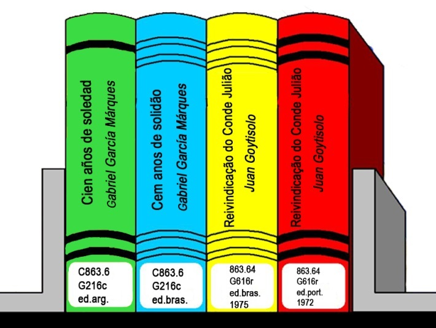

A Classificação Decimal de Dewey (em inglês: Dewey Decimal Classification; DDC ou CDD), também conhecida como Sistema Decimal de Dewey, é um sistema de classificação documentária desenvolvido pelo bibliotecário americano Melvil Dewey (1851–1931) em 1876, e desde então enormemente modificado e expandido ao longo de vinte e três grandes revisões que ocorreram até 2011. Segundo Guarido ”Dewey pode-se dizer ter sido um dos percussores da ideia, tão bem expressa pelas palavras de Smit ao referir-se ao métier da documentação, do 'reunir e organizar para achar', na medida em que, pautando-se em princípios filosóficos que nortearam, dentre outras, as ideias classificatórias de Harris e Bacon, conferiu ao ato de classificar documentos um dimensão efetivamente utilitária”.
De acordo com Andrade: "sua primeira edição foi publicada anonimamente e era denominada Classification and Subject Índex for Cataloguing and Arranging the Books and Pamphlets of a Library, a 2° edição foi publicada em 1885, com o nome Decimal Classification and Relative Índex, desta vez com indicação de responsabilidade, mas somente na sua 16° edição a obra passa a ser denominada de Dewey Decimal Classification."
Segundo Andrade (2011), "a classificação Decimal de Dewey foi desenvolvida em 1876 por Melvil Dewey, atualmente é o sistema de classificação bibliográfica mais utilizada em todo o mundo, desde sua criação até os dias atuais passou por várias edições, sendo a de 2011 a mais atual, que corresponde a 23º edição".
A CDD organiza todo o conhecimento em dez classes principais que, excluindo a primeira (000 Computadores, informação e referência geral), prosseguem do metafísico (filosofia e religião) ao mundano (história e geografia). A inteligência da CDD está na escolha de números decimais para suas categorias; isto permite que o sistema seja ao mesmo tempo puramente numérico e infinitamente hierárquico. Utiliza alguns mecanismos de uma classificação facetada, combinando elementos de diferentes partes da estrutura para construir um número representando o assunto do conteúdo (frequentemente combinando dois elementos de assuntos juntando números que representam áreas geográficas ou épocas) e sua forma, em vez de extrair a representação de uma única lista contendo cada classe e seu significado.
Exceto por obras gerais e ficção, as obras são classificadas principalmente por assunto, com extensões para relações entre assuntos, local, época ou tipo do material, produzindo números de classificação de no mínimo três digitos mas de tamanho máximo indeterminado, com um ponto decimal antes do quarto dígito, quando presente (ex.: 330 para economia + 94 para Europa = 330.94 Economia européia; 973 para Estados Unidos + 005 que é a divisão para periódicos resulta em 973.005 para designar periódicos sobre os Estados Unidos de uma forma geral). Indicadores de classes devem ser lidas e ordenadas como números, ou seja: 050, 220, 330.973, 331 etc.
Qualquer letra deve ser ordenada antes de qualquer dígito que ocupe a mesma posição, portanto "330.94 A" vem antes de 330.943. O sistema utiliza dez classes principais, que são então subdivididas. Cada classe principal tem dez divisões e cada divisão tem dez seções. Assim o sistema pode ser elegantemente resumido em 10 classes principais, 100 divisões e 1000 seções. É um equívoco comum pensar que todos os livros na CDD sejam não-ficção. No entanto, a CDD propõe um número para cada livro, incluindo aqueles que se tornam a sua própria seção de ficção. Se as regras da CDD fossem seguidas estritamente, toda a ficção estadunidense estaria na classe 813. A maior parte das bibliotecas cria uma seção especial de ficção por causa do espaço excessivo que seria ocupado na classe 800.
O International Standard Book Number, sendo chamado inicialmente de Standard Book Numbering (SBN), é um sistema internacional de identificação de livros e softwares que utiliza números para classificá-los por título, autor, país, editora e edição. Criado em 1967 e utilizado tanto pelos comerciantes de livros quanto pelas bibliotecas, foi transformado, em 1972, pela International Organization for Standardization (do inglês: "Organização Internacional de Padronização"), em norma padrão internacional: a ISO 2108.
A finalidade do sistema é a identificação numérica de um livro segundo seu título, autor, país, ou código de idioma, e a editora, individualizando inclusive edições diferentes. Uma vez fixada a identificação, ela só se aplica àquela obra e edição, não se repetindo jamais em outra. Utilizado também para identificar software, seu sistema numérico é convertido em código de barras, o que elimina barreiras linguísticas e facilita sua circulação e comercialização. A versatilidade propiciada por esse sistema de registro facilita a interconexão de arquivos e a recuperação e transmissão de dados em sistemas automatizados, razão por que é adotado internacionalmente.
O ISBN simplifica a busca e a atualização bibliográfica, concorrendo para a integração cultural entre os povos. A partir de 1 de janeiro de 2007, o ISBN passou a ser constituído por treze dígitos, em vez dos dez dígitos. Para diferenciá-los, escreve-se ISBN-10 e ISBN-13. O sistema ISBN é controlado pela Agência Internacional do ISBN, sediada em Berlim, na Alemanha, que orienta, coordena e delega poderes às Agências Nacionais designadas em cada país.
Os componentes de um ISBN de 10 dígitos e do equivalente em 13 dígitos e o respetivo código de barras, onde é possível observar o dígito de verificação diferente de cada um. Um número ISBN é atribuído a cada edição de um livro (exceto reimpressões) e suas variações (capa mole ou capa dura), podendo no caso dos ebook diferir consoante a plataforma de leitura. O ISBN tem 13 dígitos se atribuído após 1 de Janeiro de 2007, e 10 dígitos se atribuído antes de 2007. Um ISBN é constituído por 4 ou 5 partes:
Os diferentes componentes do ISBN (grupo, título, editor e dígito de verificação) são separados por um hífen ou um espaço. Nenhuma parte do ISBN tem um número fixo de dígitos, para além do dígito verificação.